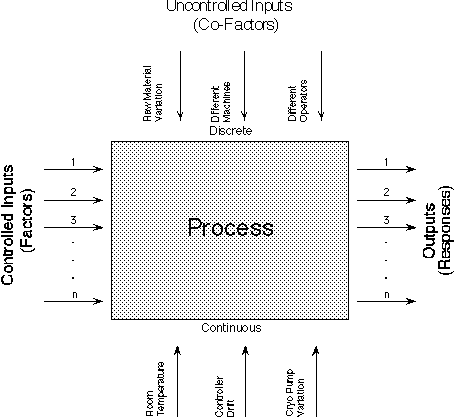

3.
Production
Process Characterization
3.4.
Data Analysis for PPC
|
|
Black box models
|
When we develop a data collection plan we build black
box models of the process we are studying like the one below:
|
|
In our data collection plan we drew process model pictures
|

|
|
Numerical models are explicit representations
of our process model pictures
|
In the Exploring Relationships
section, we looked at how to identify the input/output relationships through
graphical methods. However, if we want to quantify the relationships and
test them for statistical significance, we must resort to building
mathematical models.
|
|
Polynomial models are generic descriptors of
our output surface
|
There are two cases that we will cover for building
mathematical models. If our goal is to develop an empirical prediction
equation or to identify statistically significant explanatory variables
and quantify their influence on output responses, we typically build
polynomial models. As the name implies,
these are polynomial functions (typically linear or quadratic
functions) that describe the relationships between the explanatory
variables and the response variable.
|
|
Physical models describe the underlying physics
of our processes
|
On the other hand, if our goal is to fit an existing
theoretical equation, then we want to build
physical models. Again, as the name implies,
this pertains to the case when we already have equations representing
the physics involved in the process and we want to estimate specific
parameter values.
|